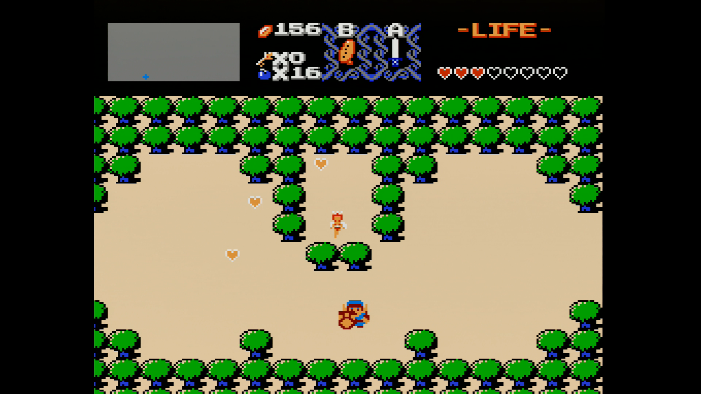
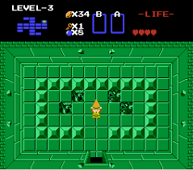
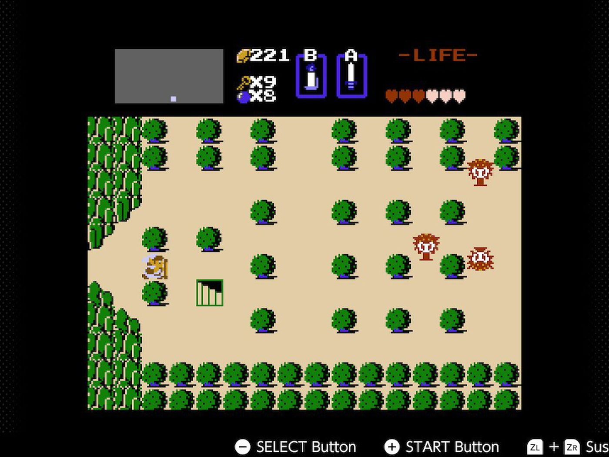
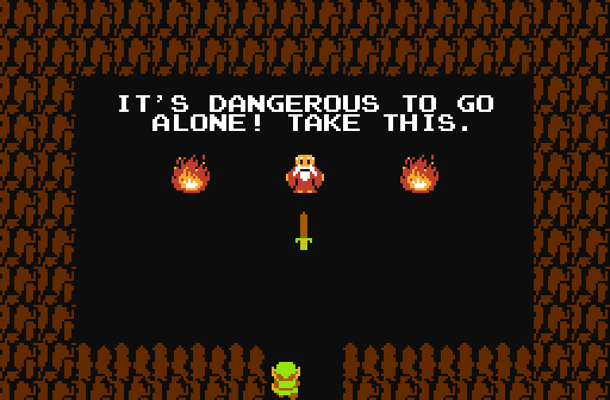
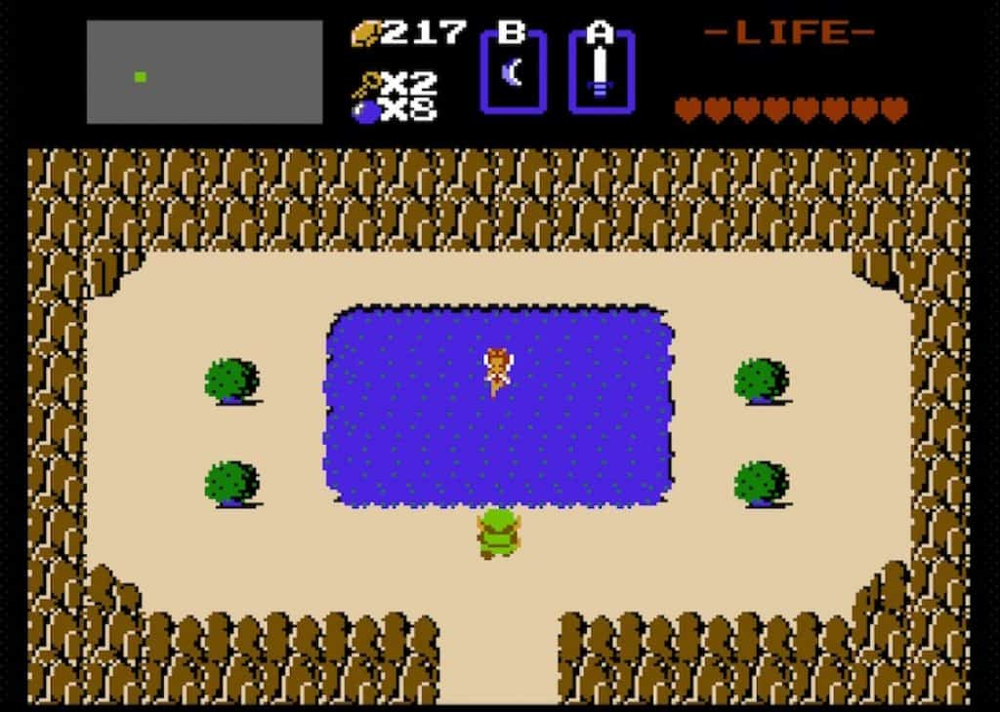

The Legend of Zelda is this totally tubular adventure where you're Link, a rad hero in green. Your mission? Navigate the gnarly land of Hyrule,
battle wicked monsters, solve brain-twisting puzzles, and save the righteous Princess Zelda from the evil Ganon. Armed with cool gear like swords and boomerangs,
you'll explore dungeons and uncover secrets. It's a non-stop, mind-blowing quest that's, like, legendary in the gaming world. Total blast from start to finish, dude!
Good CharactersLink Zelda  Old Man  |
Evil CharactersGanon Red Moblin  Octorok  |
Some EquipmentMagical Sword The Magical Sword is like the ultimate boss of swords. It's the third and final one you find, and man, it's the strongest in the game. We're talking major muscle here – this bad boy can take down most bosses with like, one to three hits. When you're wielding this sword, you're basically the top dog, the hero of heroes. Total game-changer! Magical Shield  The Magical Shield is the top-dog shield you gotta grab. It's the one and only shield upgrade in the whole game, totally kicking the Wooden Shield to the curb. It's like your ultimate defense against all the wild stuff Hyrule throws at you. Magical Rod  The Magical Rod is this totally rad weapon you can't miss. It's basically a rod that zaps out this wicked beam, perfect for zinging your enemies from a distance. Especially clutch for those baddies you wanna hit from afar – it's like blasting them away with some serious style! |
|      |